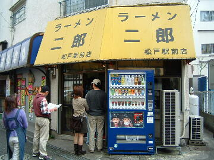

松戸市 本町 17-21
月
11：00～14：00 18：00～21：00
土 11：00～14：00 17：30～20：30
日 11：00～14：00 17：00～20：00

小ラーメン 750円、小豚ラーメン 850円
店員は、三代目の二郎の魂を継いだ兄弟である店主と助手。
ちなみに初代は赤羽店（閉店）店主、二代目は現新潟店店主である。
ブラックペッパー（ギャバン）、ホワイトペッパー（ギャバン）、唐辛子。
特別な香辛料が給水機の上にあるときもある。
レンゲ無。エコ箸と割り箸。ティッシュ有。名刺無。
BGMは、J-WAVE。
トッピングは、ニンニク、ヤサイ、アブラ、カラメ。どっさりと盛られる。
なおここでは「増し」ではなく「多め」とコールすること。（「無し」との聞き間違いを防ぐため）
ラーメン二郎 松戸駅前店Ⅲ 松戸駅前店のTwitter
「ラーメン二郎 松戸」でヤフー検索
「ラーメン二郎 松戸」でヤフーリアルタイム検索
「ラーメン二郎 松戸」でグーグル検索
ぶた入りラーメン ニンニク
麺は、直系二郎のプリプリモチモチした食感の麺。カタメはできない。量は多目。
ぶたは、肉の旨味が残っていてでかくて厚切りで美味い。バラが入っているときもある。
スープは、ド乳化。出汁もしっかり出ていて非常に美味しい。
ヤサイは、モヤシ8：キャベツ2の割合。茹で具合はシャキ。客の野菜摂取不足に考慮して多目の盛りになっている。
ニンニクは、中粒でガッツリとくる。
松戸に引っ越したいくらい美味い。
ＰＣ店